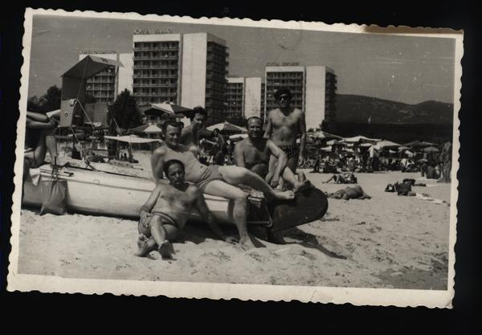

Š v i e ž i e n o s , m e s , g a r s e l i s , v a i z d e l i s.
Mes:

Vidmantas Aškinis lūpinė armonikėlė, gitara, vokalas
Tautvydas Augustinas gitara klavišiniai perkusija vokalas
Žilvinas Jagėla bosinė gitara
Eimantas Burakas mušamieji
Milda Žemaitytė atstovė kultūrai
Trumpa istorija:
Popliari grupė "Arklio Galia" gyvuoja n metų. Susikūrė pagal prodiuserių firmos "Jono Arklio muzikiniai projektai" specialų užsakymą. Įregistruota Vilniuje, Zigmo Sierakausko gatvėje nr. 15. Telefonai 862628105 (Vidmantas) arba 861064158 (Žilvinas), elektroninis paštas arkliogalia@walla.com